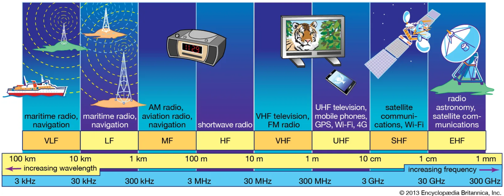
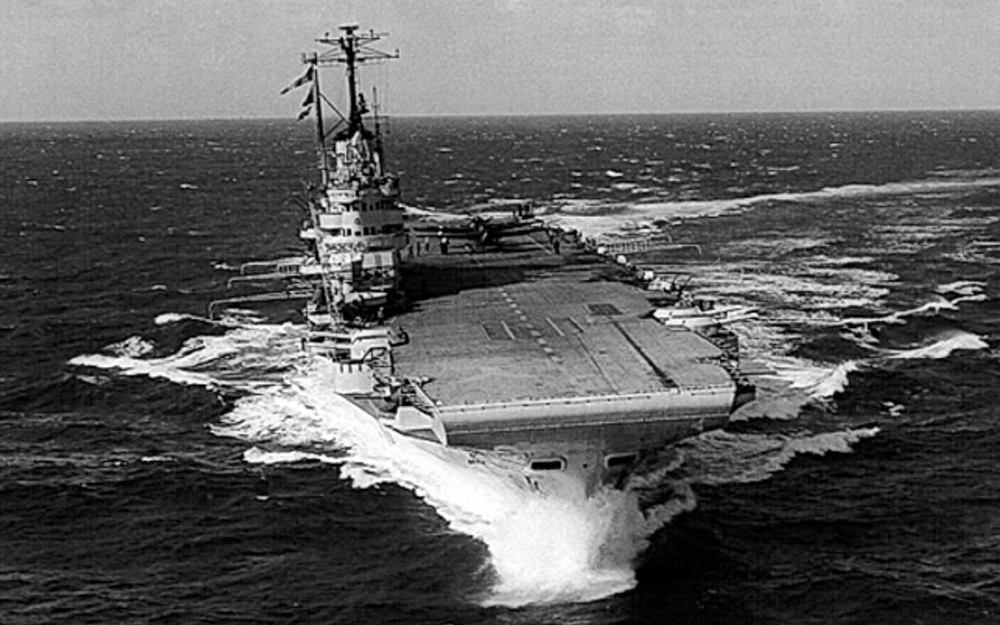
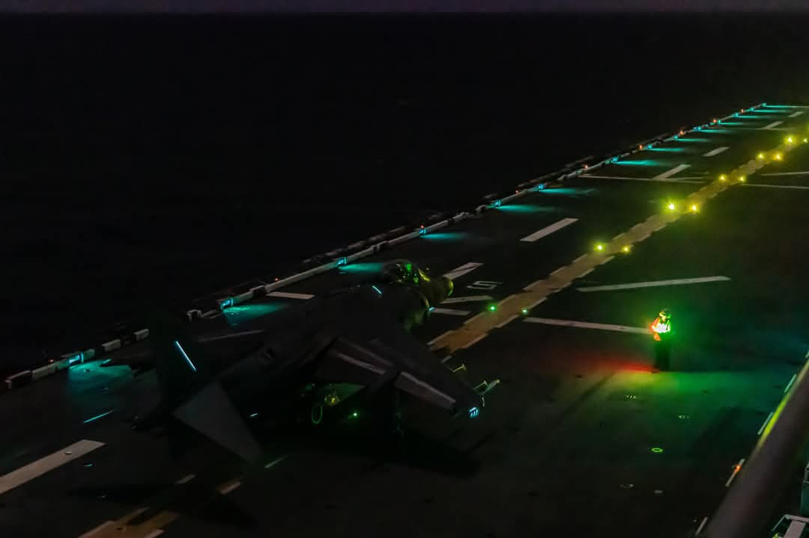
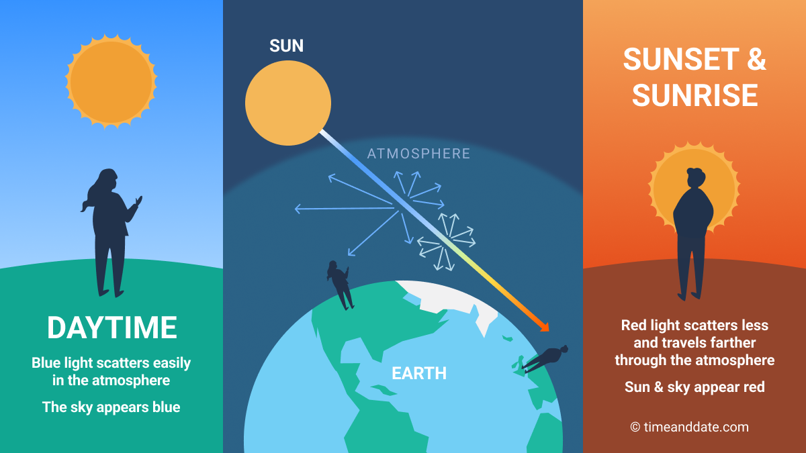
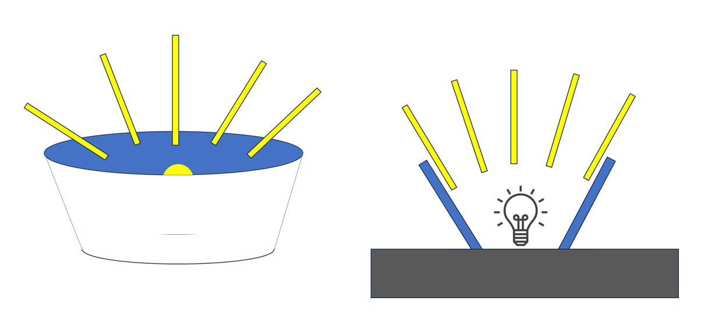
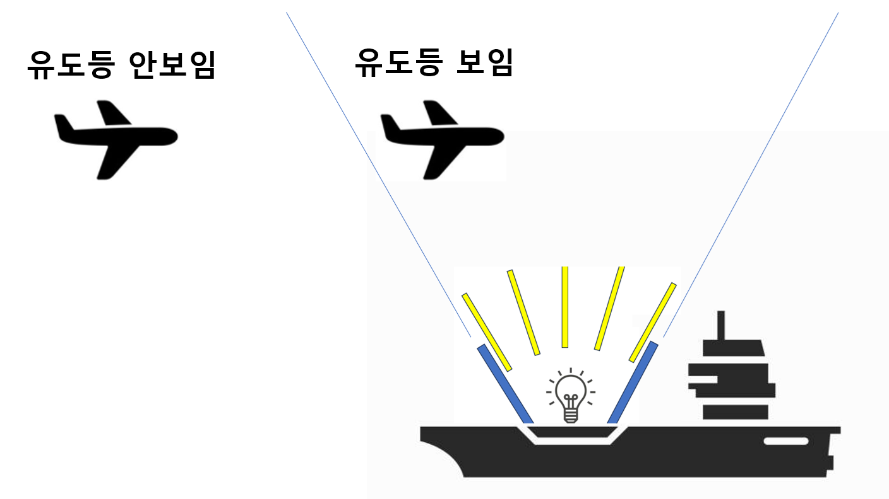

WW2 중 항모에서의 야간 작전 (28) - 레이더와 등화관제
게시: 2025-08-28T06:30:37+09:00
<어차피 다 아군이야> 1940년 11월 타란토 습격 작전에 참여했던 Swordfish 함재기들을 안전하게 모함인 HMS Illustrious로 유도한 방식에는 현대적인 보안 기준에서는 매우 취약한 부분이 많음. 지난 편에서 설명했던 Type 72 homing beacon을 이용한 전파 유도 방식은 엄밀히 이야기하면 적 폭격기도 얼마든지 일러스트리어스를 찾아올 수 있도록 해주는, 보안상 무방비 상태인 방식임. 그냥 무전기와 시계만 있으면 그 누구라도 그 신호를 듣고 방향을 찾을 수 있는 것이었기 때문. 그럼에도 불구하고 로열네이비가 이 방식을 사용한 것은 크게 두 가지. 1) 더 안전하고 효율적인 방법이 따로 없음. 2) 어차피 이탈리아놈들은 이 방식으로 야간에 일러스트리어스를 못 찾을 거라고 확신했음. 1)은 쉽게 이해가 감. 그리고 2)도 어느 정도 공감은 감. 이탈리아 해군에겐 항모가 없었지만, 인근 공군기지에서 SM.79 폭격기가 일러스트리어스를 찾아 날아오를 수도 있긴 했음. 하지만 당시 전세계에서 야간 이착함 훈련을 한 해군은 로열네이비 뿐이었고, 그나마 로열네이비에서도 그런 훈련의 목적이 야간에 적 항구 같은 고정 목표물을 공격하는 것이었지 해상에서 이동 중인 적함을 어둠 속에서 찾아내어 공격하겠다는 것은 전혀 아니었음. 아직 공대함 레이더가 개발되기 전이라서, 어둠 속에서 적함을 찾을 방법이 전혀 없었기 때문. 따라서, 이탈리아 공군 폭격기들이 야간에 일러스트리어스를 찾아 날아올 것이라고는 전혀 예상하지 않았음. 또 1분에 딱 1초 정도 들리는 신호를 해당 주파수를 모르는 상태에서 찾아내는 것은 결코 쉽지 않은 일이었음. 그래도 행운에 행운이 겹쳐 이탈리아군이 그 신호를 잡아낼 가능성이 있지 않느냐라고 묻는다면, 그럴 가능성은 0.1% 미만이었음. 이유는 로열네이비가 Type 72 homing beacon에 사용한 주파수의 대역 때문.

(원래 소드피쉬에서 모르스 부호 송수신을 위해 사용하던 것은 VHF가 아니라 HF 대역. 지구 곡면을 따라 흐르는 HF 대역이 수평선 너머 훨씬 더 먼 곳까지 전파되었기 때문. HF 대역을 쓸 경우의 문제는 위 표에서 보시다시피 전파의 파장이 VHF에 비해 훨씬 길기 때문에, 매우 긴, 10m가 가뿐히 넘는 긴 안테나를 써야 한다는 것. 그래서 초기 소드피쉬에서는 모르스 부호를 날리기 전에 큰 릴(reel)에 감아두었던 와이어 형태의 HF 안테나를 풀어서 끌고 날아야 했음.)
전에 언급한 대로 이 호밍 비콘에서 사용한 주파수는 180 MHz ~ 220 MHz 정도의 VHF 대역. 전에 할시 제독의 무전기 관련 불평 (https://nasica1.tistory.com/818 참조)에서도 설명했듯이, VHF 대역의 전파는 직진성이 있어어서 지구 곡면을 따라 휘지 않고 직진하기 때문에 수평선 저 너머 아래에 존재하는 이탈리아 지상 기지의 전파 탐지기에는 걸리지 않았던 것. 이 신호를 받을 수 있는 것은 높은 상공을 나는 항공기뿐. 아군 함재기야 당연히 주파수도 알고 높은 고도로 날아서 귀환하니까 이 신호를 받을 수 있음. 고공을 날고 있는 이탈리아 공군 폭격기에서도 그 신호를 탐지할 수 있지 않나? 엄청난 운이 따른다고 해도 주파수를 찾아내는데 고생을 하겠지만, 그래도 가능성은 있었음. 그러나 영국 항모가 매일 밤마다 그렇게 호밍 비콘 신호를 날리면서 인근 바다에서 얼쩡거리는 것도 아닌데, 혹시 영국 항모를 찾아낼 수 있을지도 모른다는 실낱 같은 희망 때문에 이탈리아 폭격기들이 밤마다 편대를 지어 위험한 야간 비행을 나설 리는 없었음. 무엇보다, 정말 만에 하나라도 이탈리아 공군이 그 호밍 비콘 신호를 포착하고 날아온다고 해도, 일러스트리어스에게는 대비책이 있었음. 바로 레이더. 레이더를 통해서 야간이든 주간이든 수십 km 밖에서 날아오는 항공기들을 다 보고 있었음. 따라서 크기나 기체 수로 보아 아군 함재기가 아닌 것 같은 항공기들이 자함 방향으로 똑바로 날아온다? 그러면 그냥 비콘 신호를 끄고 항로를 바꿔 어둠 속으로 사라지면 됨.

(당시 HMS Illustrious에 장착된 것은 Type 79 Early Warning Radar)
전에 언급한 대로, 그 편대 중 한 대였던 램 대위는 동료들이 모두 격추되어 자기만 남았다고 침울해 하고 있었으나, 일러스트리어스는 타란토 습격을 마치고 돌아오는 1차 공격대 11대가 1대씩 따로 돌아오는 모습을 레이더로 다 보고 있었음. 그래서 1대의 소드피쉬는 격추되어 돌아오지 못한다는 것은 이미 알고 있었고, 원래 예상했던 것보다 생환률이 높은 것에 이미 무척 기뻐하고 있었음. 잠깐, 전파 유도를 통해서 그 소드피쉬들이 항모 주변까지 오도록 안내는 할 수 있었으나, 그래도 착함할 때는 뭔가 불빛이 있어야 하지 않았을까? 무선 침묵과 함께 등화 관제가 기본일 텐데, 그건 어떻게 해결했을까? <항공모함은 등화관제 안 하나?> 어둠 속에서 아무리 전파 유도를 하더라도 최종 착함시에는 당연히 조종사가 눈으로 비행갑판을 보고 착함해야 함. 그러자면 당연히 착함을 위한 유도등을 켜야 함. 야간 작전할 때 구축함 갑판에서 누가 담배불만 켜도 난리가 난다고 하더니, 그렇게 넓고 긴 비행갑판에 전기불을 환히 밝혀도 되는 거였나?

(이건 현대적인 상륙강습함(amphib)에서 야간 이함 훈련 중인 모습. 야간에는 저렇게 초록색 유도등을 쓰는데, 이유는 녹색 청색의 빛이 대기 중에 산란이 잘 되기 때문에 먼 거리에서는 이미 다 산란되어 눈에 덜 띄기 때문이라고. WW2 중에도 항모에서 저렇게 녹색 청색 등을 썼는지는 확인 못했음.)

(그에 비해 적색 계열은 대기 중에 산란되는 것이 적어서 먼 거리에서도 더 잘 보인다고. 해가 질 때, 즉 햇빛이 통과해야 하는 대기층이 더 길어질 때 하늘이 붉은 색이 되는 이유가 그런 것이라고 함)
당시 소드피쉬들이 일러스트리어스 근처까지 접근하자, 일러스트리어스에서는 소드피쉬들에게 좀더 확실히 일러스트리어스의 위치를 알려주려고 아예 부유식 조명탄에 불을 붙여 양현의 바다로 던졌음. 이건 10여 km 밖의 항공기에서도 훤히 볼 수 있는 밝은 불빛. 대체 왜 이런 짓을 했을까? 일단 기본적인 이유는 레이더. 레이더를 통해 근처 하늘에는 적 폭격기가 없다는 것을 확인했기 때문. 그리고 그런 부유식 조명탄 이외에도 당시 일러스트리어스에서는 나름 특수하게 만든 착함 유도등을 켜고 있었음. WW2 발발 전부터 이미 여러 차례 야간 이착함 훈련을 했던 로열네이비에서는 나름대로의 교리를 갖추고 있었는데, 이론적인 엄격함과 현실적인 필요 사이에서 적절히 실용적인 중간을 택한 것. 먼저, 갑판에 밝히는 유도등은 아주 환하지는 않았고, 항모 근처 수 km 안쪽으로 들어온 항공기에서 보일 정도로 작은 전구를 사용. 그리고 불필요한 노출을 줄이기 위해, 전구에는 반구형의 가림막을 설치하여 항모의 전방에서는 불빛이 보이지 않도록 막았음. 즉, 어차피 함재기는 반드시 항모의 고물쪽으로 접근하여 착함해야 하므로, 어둠 속에서 함재기가 이물 방향과 고물 방향을 착각하지 않도록 하기 위해서라도 유도등은 고물쪽에서만 보이도록 한 것. 물론 이러면 혹시 근처에 적기가 있을 경우 적에게 들킬 확률이 1/2로 줄어든다는 이점도 있었음. 나중의 일이지만, WW2가 전개되면서 미해군 항모에서도 야간 이착함이 실시되었음. 미해군에서는 이렇게 항모 갑판의 유도등에 가림막을 설치하는 것을 좀더 발전시켰음. 즉, 미해군은 유도등에 마치 꽃받침처럼 위로는 뚫리고 옆으로는 막은 가림막을 설치했음. 왜 그랬을까?

(미해군의 유도등 가림막에 대해서는 문서상으로만 읽고 그림은 본 적 없지만 내가 이해한 바를 그냥 개발새발 손으로 그렸음. 저 꽃받침의 각도가 45도였는지 60도였는지는 기억이 안 남.) 생각해보면 이것이 기발하고도 필요한 것. 이렇게 옆방향으로 가림막을 해놓으면, 먼 곳에 있는 항공기는 항모의 유도등을 볼 수 없지만, 항모에서 가까운 상공까지 접근한 항공기는 잘 볼 수 있음. 항모로부터 4~5km까지 근접한 항공기는 항모의 유도 전파를 수신하여 찾아온 아군 함재기일 가능성이 매우 높으므로, 아군 항공기에만 유도등을 보여주는 효과를 낼 수 있는 것. 물론 이에 더해 고물쪽에서만 보이는 더 낮은 밝기의 착함 유도등은 따로 두었음.

(수평 방향 가림막의 효과를 보여주는 개념도) 이제 대략 타란토 습격 작전이 마무리 되어감. 다음 주에는 타란토 습격 에필로그가 이어짐.